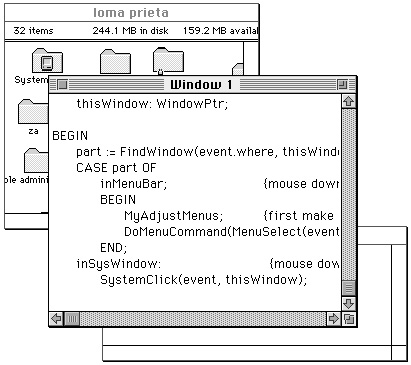
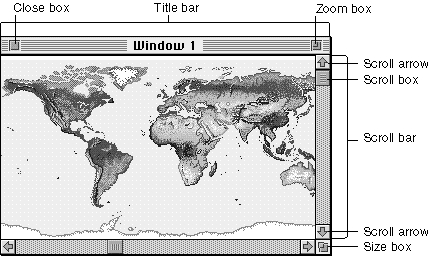

Legacy Document
Important: The information in this document is obsolete and should not be used for new development.
Important: The information in this document is obsolete and should not be used for new development.


Introduction to Windows
A window is a user interface element, an area on the screen in which the user can enter or view information.The user can have multiple windows on the desktop at once, from a number of different applications. The user can change the size and location of most windows and can place windows entirely or partially in front of other windows. Figure 4-1 shows a few windows on the desktop.

Your application typically creates document windows that allow the user to enter and display text, graphics, or other information. For an illustration of a document window in full color, see Plate 1 at the beginning of this book.
A document window is a view into the document--if the document is larger than the window, the window is a view of a portion of the document. Your application can put one or more windows on the screen, each window showing a view of a document or of auxiliary information used to process the document.
The Window Manager defines and supports a set of standard window elements through which the user can manipulate windows. It's important that your application follow the standard conventions for drawing, moving, resizing, and closing windows. By presenting the standard interface, you make experienced users instantly familiar with many aspects of your application, allowing them to focus on learning its unique features.
Figure 4-2 illustrates a standard document window and its elements.

The title bar displays the name of the window and indicates whether it's active or not. The Window Manager displays the title of the window in the center of the title bar, in the system font and system font size. If the system font is in the Roman script system, the title bar is 20 pixels high.
When the user creates a new document, you ordinarily display a new document window with the title "untitled", spelled in lowercase letters. If the user creates a second new document window without saving the first, you title the second window "untitled 2", with a space between the word and the number. Continue to add 1 to the number in the title as long as the user continues to create new windows without saving previously numbered, untitled windows.
When the user opens a saved document, you assign the document's filename to the window in which it is displayed.
The user expects to move a window by dragging it by its title bar. You can support moving the window by calling the Window Manager's
DragWindowprocedure, as described in "Moving a Window" on page 4-46.The close box offers the user a quick way to close a window. You can use the TrackGoAway function to track mouse activity in the close box and the CloseWindow and DisposeWindow procedures to close windows. Closing windows is described in "Closing a Window" beginning on page 4-53.
The zoom box offers the user a quick way to switch between two different window sizes. You use the TrackBox function to track mouse activity in the zoom box and the ZoomWindow procedure to zoom windows. Zooming windows is described in "Zooming a Window" beginning on page 4-47.
The size box lets the user change the size and dimensions of the window. You use the GrowWindow function to track mouse activity in the size box and the SizeWindow procedure to resize windows. Sizing windows is described in "Resizing a Window" beginning on page 4-50.
The scroll bars let the user see different parts of a document that contains more information than can be displayed at once in the window. Although the Macintosh user interface guidelines specify that you place scroll bars on the right and lower edges of a window that needs them, scroll bars are not part of the window structure. You create and control the scroll bars through the Control Manager, described in the chapter "Control Manager" in this book.
The content region is the part of the window in which your application displays the contents of a document, the size box, and the window controls.
The window frame is the part of the window drawn automatically by the Window Manager--the title bar, including the close box and zoom box, and the window's outline.
The structure region is the entire screen area occupied by a window, including the frame and content region. (See Figure 4-10 on page 4-10.)
Subtopics
- Active and Inactive Windows
- Types of Windows
- Window Regions
- Dialog Boxes and Alert Boxes
- Controls
- Windows on the Desktop